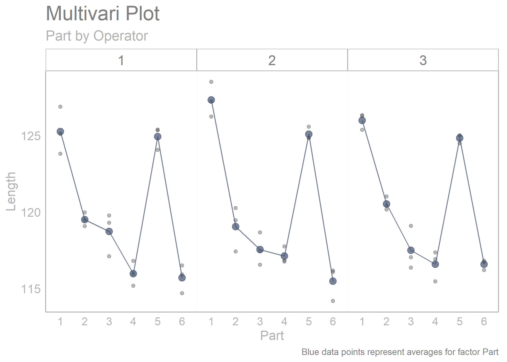
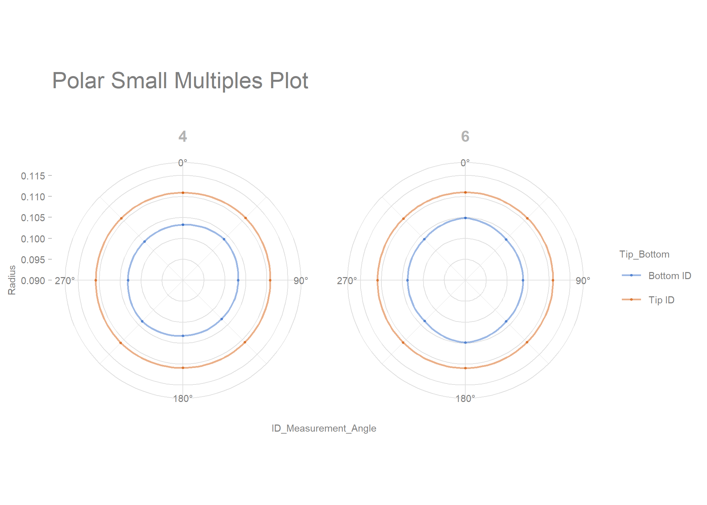
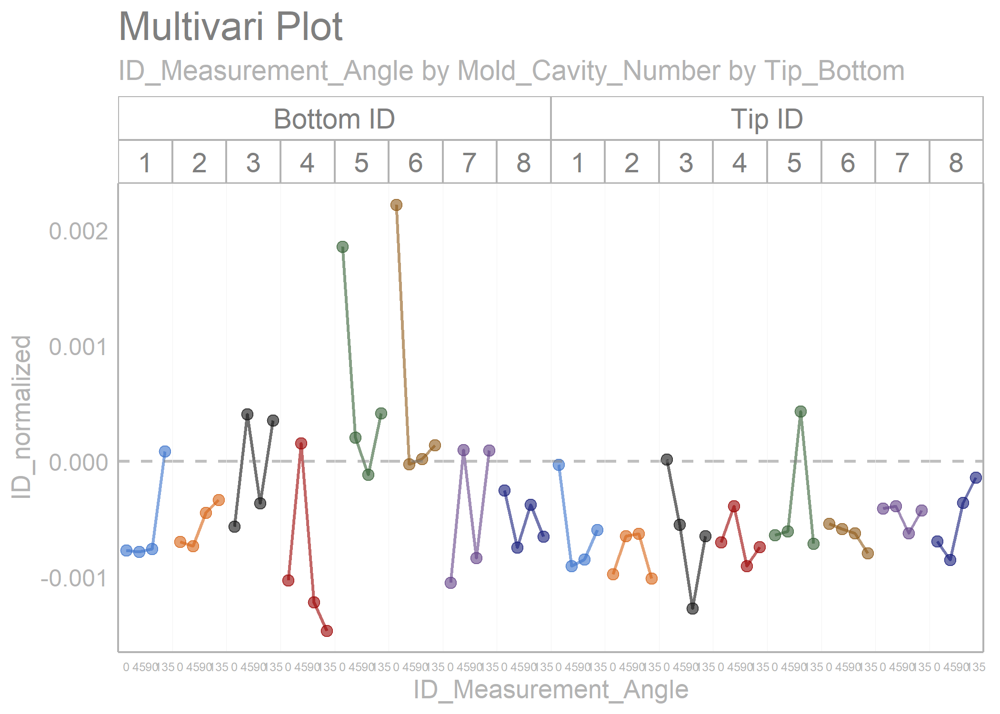
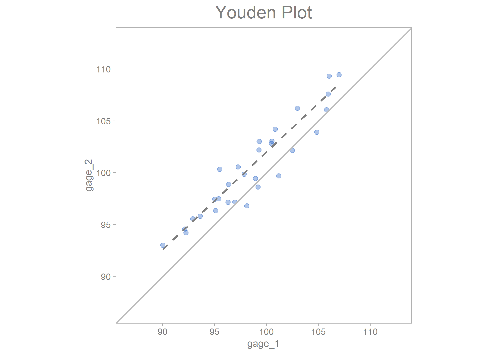
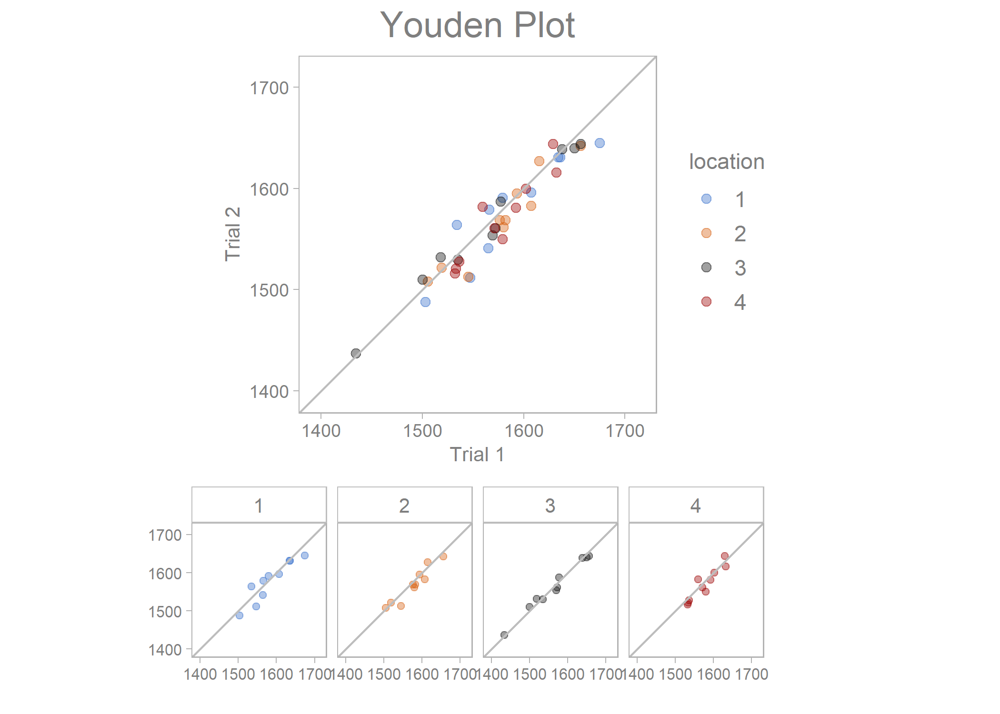
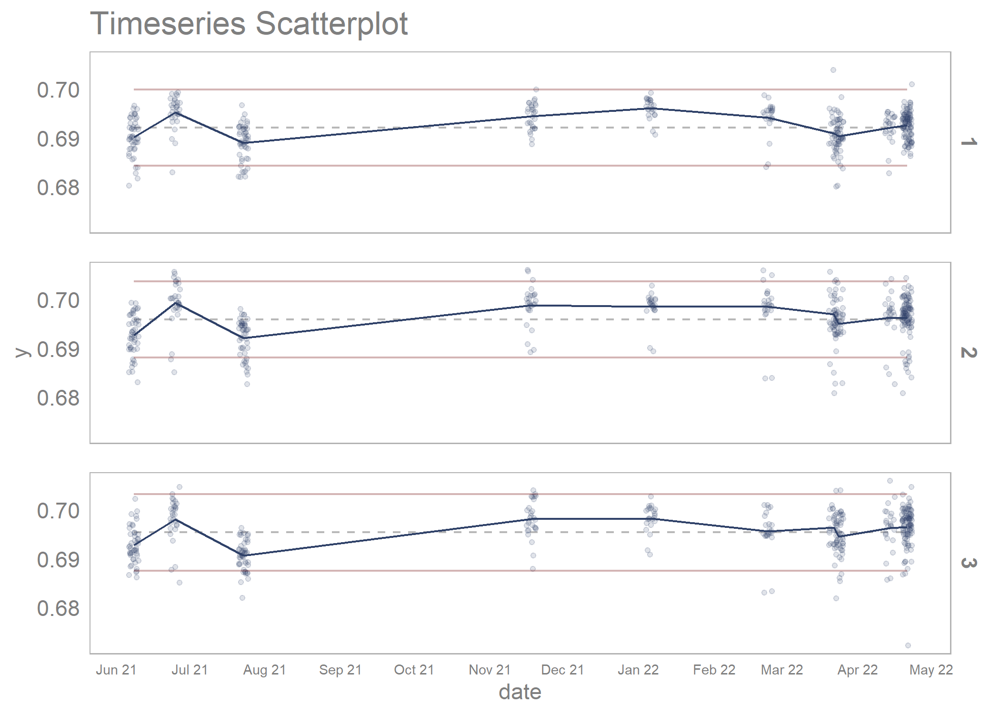

The {sherlock} R package provides powerful graphical displays and statistical tools to aid structured problem solving and diagnosis. The functions of the package are especially useful for applying the process of elimination as a problem diagnosis technique. {sherlock} was designed to seamlessly work with the tidyverse set of packages.
“That is to say, nature’s laws are causal; they reveal themselves by comparison and difference, and they operate at every multi-variate space-time point” - Edward Tufte
Installation
sherlock is available on CRAN and can be installed by running the below script:
install.packages("sherlock")You can also install the development version of sherlock from GitHub with:
# install.packages("devtools")
devtools::install_github("gaborszabo11/sherlock")Functions
Examples
Here are a few examples:
# Loading libraries
library(sherlock)
library(ggh4x)
#> Loading required package: ggplot2
#> Warning: package 'ggplot2' was built under R version 4.2.2
multi_vari_data %>%
draw_multivari_plot(response = force,
factor_1 = cycle,
factor_2 = fixture,
factor_3 = line)
library(sherlock)
library(ggh4x)
multi_vari_data_2 %>%
draw_multivari_plot(response = Length,
factor_1 = Part,
factor_2 = Operator, plot_means = TRUE)
library(sherlock)
library(dplyr)
#>
#> Attaching package: 'dplyr'
#> The following objects are masked from 'package:stats':
#>
#> filter, lag
#> The following objects are masked from 'package:base':
#>
#> intersect, setdiff, setequal, union
polar_small_multiples_data %>%
filter(Mold_Cavity_Number %in% c(4, 6)) %>%
draw_polar_small_multiples(angular_axis = ID_Measurement_Angle,
x_y_coord_axis = ID_2,
grouping_var = Tip_Bottom,
faceting_var_1 = Mold_Cavity_Number,
point_size = 0.5,
connect_with_lines = TRUE,
label_text_size = 7)
library(sherlock)
library(dplyr)
library(ggh4x)
polar_small_multiples_data %>%
filter(ID_Measurement_Angle %in% c(0, 45, 90, 135)) %>%
normalize_observations(response = ID, grouping_var = Tip_Bottom, ref_values = c(0.2075, 0.2225)) %>%
draw_multivari_plot(response = ID_normalized,
factor_1 = ID_Measurement_Angle,
factor_2 = Mold_Cavity_Number,
factor_3 = Tip_Bottom,
x_axis_text = 6) +
draw_horizontal_reference_line(reference_line = 0)
#> Joining, by = "Tip_Bottom"
youden_plot_data_2 %>%
draw_youden_plot(x_axis_var = gage_1,
y_axis_var = gage_2,
median_line = TRUE)
#> Smoothing formula not specified. Using: y ~ x
youden_plot_data %>%
draw_youden_plot(x_axis_var = measurement_1,
y_axis_var = measurement_2,
grouping_var = location,
x_axis_label = "Trial 1",
y_axis_label = "Trial 2")
timeseries_scatterplot_data %>%
draw_timeseries_scatterplot(y_var = y,
grouping_var_1 = date,
grouping_var_2 = cavity,
faceting = TRUE,
limits = TRUE,
alpha = 0.15,
line_size = 0.5,
x_axis_text = 7,
interactive = FALSE)
#> Joining, by = c("date", "cavity")
#> Warning: Removed 6 rows containing missing values (`geom_point()`).